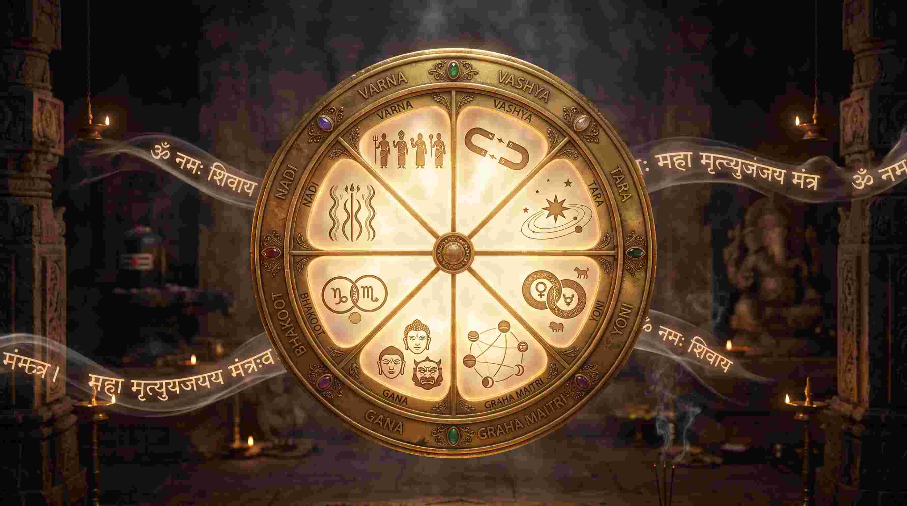
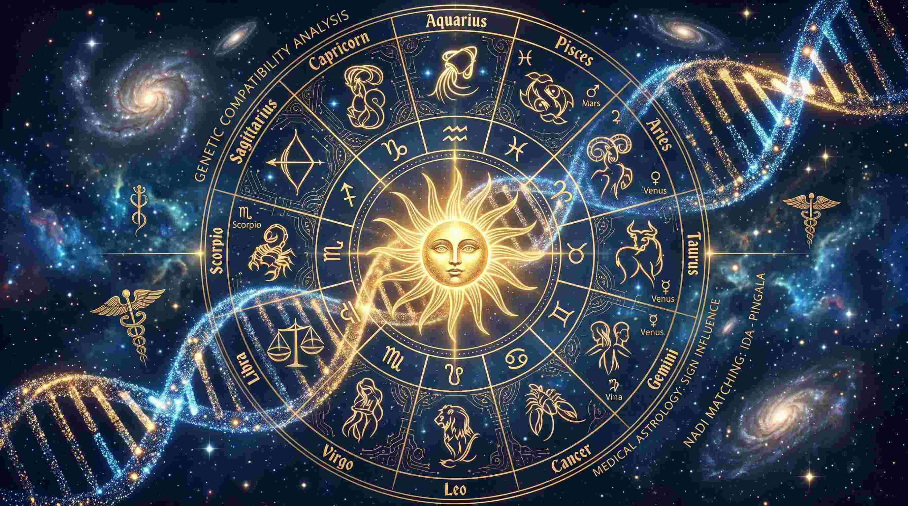
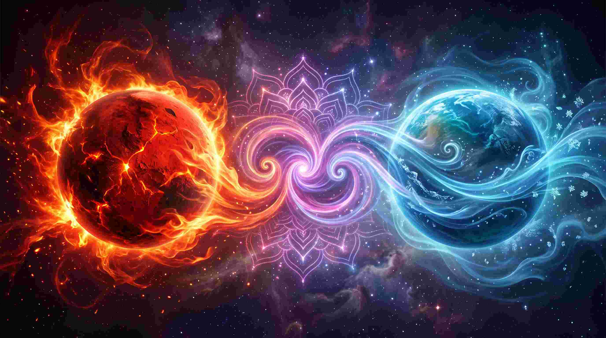
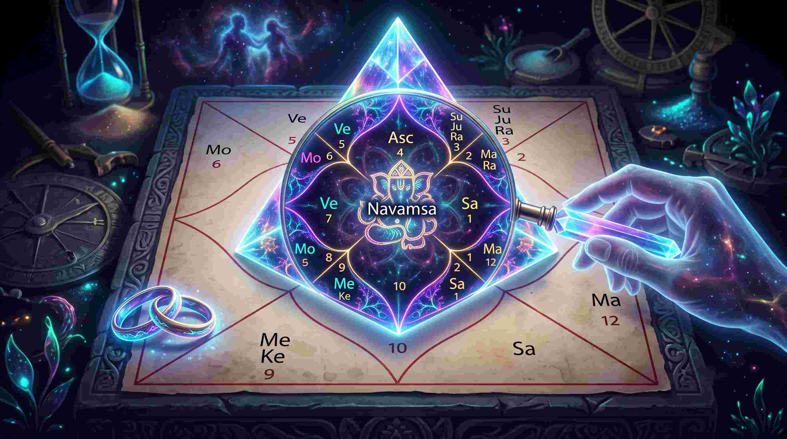

भारत में विवाह केवल दो व्यक्तियों का नहीं, बल्कि दो आत्माओं, दो परिवारों और उनके कर्मों का मिलन माना जाता है। जब भी शादी की बात आती है, तो सबसे पहला कदम होता है— कुंडली मिलान (Kundali Milan)। लेकिन आज के समय में एक बहुत बड़ा सवाल खड़ा हो गया है: "पंडित जी ने तो 36 में से 32 गुण मिलाए थे, फिर भी शादी एक साल में ही क्यों टूट गई?"
एक मेडिकल छात्र और ज्योतिषी होने के नाते, मैं अक्सर लोगों को यह समझाता हूँ कि जिस तरह केवल ब्लड ग्रुप (Blood Type) मैच कर लेने से दो इंसान एक जैसे नहीं हो जाते, उसी तरह केवल सॉफ्टवेयर या कंप्यूटर से 'अष्टकूट' (8 Kootas) के नंबर मिला लेना सफल विवाह की गारंटी नहीं है। विवाह की सफलता आपके कॉस्मिक डीएनए (Cosmic DNA), आपके सप्तम भाव (7th House) की गहराई और नवांश कुंडली (Navamsha D-9) के सूक्ष्म विश्लेषण पर निर्भर करती है। आइए आज इस विषय की पूरी गहराई में उतरते हैं और उन रहस्यों को खोलते हैं जो 99% लोग नहीं जानते।
"कुंडली मिलान केवल अंकों का गणित नहीं है; यह दो सूक्ष्म शरीरों (Astral bodies) और उनके पिछले जन्मों के मनोवैज्ञानिक और जैविक (Biological) तारों को जोड़ने की एक अत्यधिक उन्नत वैज्ञानिक प्रक्रिया है।"
1. अष्टकूट मिलान (Ashtakoot Milan): 36 गुणों का असली अर्थ क्या है?
ज्यादातर लोग सोचते हैं कि 36 गुण सिर्फ एक स्कोर है। असल में, यह स्कोर 8 अलग-अलग मापदंडों (Parameters) से बनता है, जिसे 'अष्टकूट' कहा जाता है। आइए इन्हें आधुनिक मनोविज्ञान (Psychology) और मेडिकल साइंस (Medical Science) की दृष्टि से समझते हैं:

- वर्ण (Varna) - 1 अंक: यह आध्यात्मिक अनुकूलता और काम करने की क्षमता (Work Ethic) को दर्शाता है। यह तय करता है कि दोनों के ईगो (Ego) आपस में कैसे टकराएंगे।
- वश्य (Vashya) - 2 अंक: वश्य का अर्थ है 'नियंत्रण' (Control)। यह दर्शाता है कि रिश्ते में पावर डायनामिक्स (Power Dynamics) कैसे होंगे। क्या दोनों में से कोई एक दूसरे पर हावी होने की कोशिश करेगा?
- तारा (Tara) - 3 अंक: तारा मिलान भाग्य (Destiny) का मिलन है। यह बताता है कि क्या एक साथी का भाग्य दूसरे के दुर्भाग्य को काट सकता है या नहीं।
- योनि (Yoni) - 4 अंक: योनि मिलान विशुद्ध रूप से जैविक और शारीरिक अनुकूलता (Biological and Intimate compatibility) है। मेडिकल भाषा में, यह आपके न्यूरोट्रांसमीटर्स और फेरोमोन्स के मैच होने जैसा है। यदि योनि दोष है, तो पति-पत्नी के बीच शारीरिक और मानसिक आकर्षण खत्म हो जाता है।
- ग्रह मैत्री (Graha Maitri) - 5 अंक: यह मनोवैज्ञानिक संरेखण (Psychological alignment) है। क्या आप दोनों दुनिया को एक ही नज़रिए से देखते हैं? क्या आपकी दिमागी वायरिंग एक जैसी है? यह चंद्र राशियों के स्वामियों की मित्रता पर निर्भर करता है।
- गण (Gana) - 6 अंक: गण (देव, मनुष्य, राक्षस) व्यक्ति के मूल स्वभाव (Core Temperament) को दर्शाता है। क्या आप शांत स्वभाव के हैं या आक्रामक? गण दोष होने पर छोटी-छोटी बातों पर भयंकर विवाद होते हैं।
- भकूट (Bhakoot) - 7 अंक: यह स्वास्थ्य, धन और भावनात्मक प्रतिध्वनि (Emotional Resonance) का मिलन है। भकूट दोष होने पर शादी के बाद अचानक स्वास्थ्य खराब होना या आर्थिक नुकसान होना आम बात है।
- नाड़ी (Nadi) - 8 अंक: नाड़ी मिलान 36 गुणों में सबसे महत्वपूर्ण है। यह जेनेटिक और शारीरिक अनुकूलता (Genetic and Physiological compatibility) है। नाड़ी दोष होने पर अक्सर संतान उत्पत्ति में समस्या (Reproductive health issues) या गंभीर बीमारियां देखी जाती हैं।
2. नाड़ी दोष (Nadi Dosha): मेडिकल एस्ट्रोलॉजी का सबसे बड़ा रहस्य
नाड़ी (आदि, मध्य, और अंत्य) हमारे शरीर के वात, पित्त और कफ (Ayurvedic Doshas) को दर्शाती है। आधुनिक विज्ञान के नजरिए से देखें, तो यदि पति और पत्नी की नाड़ी एक ही है (एक ही ब्लडलाइन या जेनेटिक प्रीडिस्पोजिशन), तो उनकी होने वाली संतान में जेनेटिक म्यूटेशन या स्वास्थ्य संबंधी समस्याएं होने का खतरा कई गुना बढ़ जाता है।

यही कारण है कि हमारे प्राचीन ऋषियों ने नाड़ी दोष को 8 में से सबसे ज्यादा (8) अंक दिए हैं। यदि कंप्यूटर आपको नाड़ी दोष दिखा रहा है, तो तुरंत घबराएं नहीं। वैदिक ज्योतिष में इसके कई अपवाद (Cancellations) हैं, जैसे यदि दोनों का नक्षत्र एक ही है लेकिन चरण अलग-अलग हैं, तो नाड़ी दोष रद्द (Cancel) हो जाता है। इसके लिए एक अनुभवी ज्योतिषी की आवश्यकता होती है, कंप्यूटर सॉफ्टवेयर की नहीं।
3. मंगल दोष (Mangal Dosha) का डर: मिथक और वास्तविकता
शादी के मामले में सबसे ज्यादा डराने वाला शब्द है— "मांगलिक"। जब कुंडली के पहले, चौथे, सातवें, आठवें या बारहवें भाव में मंगल बैठता है, तो व्यक्ति को मांगलिक कहा जाता है। लोग सोचते हैं कि मांगलिक होने का मतलब है जीवनसाथी की मृत्यु हो जाना। यह एक बहुत बड़ा झूठ और मिथक है!

मेडिकल भाषा में समझें तो, मंगल (Mars) एड्रेनालाईन (Adrenaline), टेस्टोस्टेरोन (Testosterone) और असीमित ऊर्जा (Aggression/Energy) का कारक है। एक मांगलिक व्यक्ति के अंदर ऊर्जा का स्तर एक गैर-मांगलिक व्यक्ति से बहुत अधिक होता है। यदि आप एक हाई-एनर्जी (मांगलिक) व्यक्ति की शादी एक लो-एनर्जी (गैर-मांगलिक) व्यक्ति से कर देंगे, तो क्या होगा?
हाई-एनर्जी वाला व्यक्ति हमेशा हावी होने की कोशिश करेगा, जिससे रिश्ते में तनाव, क्रोध और अंततः अलगाव (Divorce) की नौबत आ जाएगी। इसलिए एक मांगलिक की शादी दूसरे मांगलिक से की जाती है—ताकि दोनों की ऊर्जा (Fire) आपस में टकराकर शांत (Balance) हो जाए। मंगल दोष कोई श्राप नहीं है, यह सिर्फ 'एनर्जी मैचिंग' का विज्ञान है।
4. नवांश कुंडली (Navamsha / D-9 Chart): विवाह का असली एक्स-रे
अब आते हैं उस रहस्य पर जिसके कारण 32 गुण मिलने के बाद भी शादियां टूट जाती हैं। आप जो अपनी मुख्य कुंडली देखते हैं, वह लग्न कुंडली (D-1 Chart) है। यह कुंडली केवल बाहर का आवरण है। विवाह की असली सफलता, जीवनसाथी का स्वभाव, और शादी के बाद की किस्मत नवांश कुंडली (D-9 Chart) में छिपी होती है।

D-9 चार्ट विवाह का 'एक्स-रे' (X-Ray) है। यदि लग्न कुंडली में विवाह का स्वामी (7th Lord) बहुत मजबूत है, लेकिन नवांश कुंडली (D-9) में वह नीच का (Debilitated) हो गया, राहु-केतु से पीड़ित हो गया, या 6, 8, 12वें भाव में चला गया, तो 36 में से 36 गुण मिलने के बाद भी वह विवाह दुखदायी साबित होगा। बिना D-9 चार्ट का सूक्ष्म अध्ययन किए किसी भी विवाह को हरी झंडी देना ज्योतिषीय अपराध है।
5. आधुनिक युग के रिश्ते और कुंडली के "रेड फ्लैग्स" (Red Flags)
आज के समय में तलाक और एक्स्ट्रा-मैरिटल अफेयर्स के मामले बहुत बढ़ गए हैं। कुंडली मिलान के समय, गुणों के अलावा दोनों की व्यक्तिगत कुंडलियों में कुछ 'रेड फ्लैग्स' (खतरे के संकेत) जरूर चेक करने चाहिए:
- राहु-शुक्र की युति (Rahu-Venus Conjunction): शुक्र प्रेम है और राहु भ्रम है। यदि किसी की कुंडली में यह युति बुरी तरह प्रभावित है, तो व्यक्ति को कभी भी एक रिश्ते में संतुष्टि नहीं मिलती। वह हमेशा कुछ 'नया' और 'रोमांचक' तलाशता है।
- सप्तमेश का 6ठे, 8वें या 12वें भाव में होना: यह स्थिति अक्सर वैवाहिक जीवन में कानूनी विवाद (Litigation), अलगाव या जीवनसाथी के खराब स्वास्थ्य का संकेत देती है।
- चंद्र-शनि की युति (विष योग): यदि किसी एक साथी का मन (चंद्रमा) हमेशा अवसाद (Depression) या शंकाओं (Saturn) से घिरा रहेगा, तो शादी में खुशी कभी नहीं आ सकती। इसका मेडिकल एस्ट्रोलॉजी के जरिए इलाज और उपाय बेहद जरूरी है।
निष्कर्ष: एक सफल विवाह का असली सूत्र
आधुनिक युग में, कुंडली मिलान को एक 'अंतिम फैसले' के रूप में नहीं, बल्कि एक 'मार्गदर्शक' (Guidance tool) के रूप में लेना चाहिए। 36 गुण केवल यह बताते हैं कि आपके सॉफ्टवेयर कितने मैच करते हैं, लेकिन उस रिश्ते को चलाना आपकी आपसी समझ (Mutual Understanding), सम्मान (Respect), और संवाद (Communication) पर निर्भर करता है।
यदि आप विवाह करने जा रहे हैं, तो कंप्यूटर जनित (Computer-generated) गुण मिलान पर आंख मूंदकर भरोसा न करें। एक योग्य ज्योतिषी से दोनों कुंडलियों का D-1, D-9, नाड़ी और ग्रहों की दृष्टि का गहरा विश्लेषण करवाएं। सही ज्ञान, तार्किक उपाय (Remedies) और एक-दूसरे के प्रति समर्पण ही वह कॉस्मिक गोंद है जो दो आत्माओं को जीवन भर के लिए जोड़े रखता है।